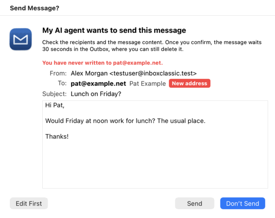

Amikor egy ügynök levelet küld
Küldés előtt hagyja jóvá az ügynök üzenetét, amely ezután rövid ideig a Postázandó üzenetek mappában vár.
Az Inbox Classicban az ügynök csak küldési jogosultsággal és az egyes üzenetek külön jóváhagyásával küldhet levelet.

Amikor az ügynök küldést kér, az Inbox Classic megjeleníti az üzenetet és a címzettek teljes e-mail-címét. Azoknál a címeknél, amelyekre még nem írt, az Új cím jelölés látható.
- Ellenőrizze a címzetteket, és olvassa el az üzenet szövegét.
- Válasszon:
- A Küldés gomb küldési sorba helyezi az üzenetet. Rövid késleltetéssel válik elérhetővé, hogy csökkentse a véletlen kattintások esélyét.
- A Szerkesztés küldés előtt gomb megnyitja az üzenetet a szerkesztőben, ahol küldés előtt módosíthatja.
- A Ne küldje el gomb elutasítja a küldési kérelmet. Ez az alapértelmezett választás.
Programonként egyszerre egy üzenet várhat jóváhagyásra. Ha nem válaszol rögtön, az ügynök értesül arról, hogy a kérés még válaszra vár. A döntést később is lekérdezheti. Az ügynök által írt üzenetekhez és piszkozatokhoz alapértelmezés szerint hozzáadódik a fiók aláírásszövege. Az ügynök ezt kihagyhatja.
A jóváhagyott üzenet legalább 30 másodpercig a Postázandó üzenetek mappában vár a küldés megkezdése előtt. Ezalatt törölheti onnan, vagy használhatja a Visszavonás gombot az Eszközök > MI-ügynökök menüponttal megnyitható ablakban. A már elküldött üzenet nem hívható vissza.
Válaszok meghívókra
A küldésre jogosult ügynök naptármeghívó elfogadását, feltételes elfogadását vagy elutasítását is kérheti, külön jóváhagyással. A jóváhagyási ablak a szöveg fölött megnevezi az eseményt és annak időpontját. Az Inbox Classic a meghívó adataiból készíti el a szervezőnek szóló választ, naptárválasz-melléklettel és a fiók aláírásszövege nélkül. A válasz küldés előtt nem nyitható meg szerkesztésre. A helyben tárolt válaszállapot csak a sikeres elküldés után változik meg; ez nem igazolja, hogy a szervező naptára már feldolgozta a választ.
Ügynök által írt piszkozatok
Az ügynök által írt piszkozat megnyitásakor az ügynök neve az üzenet szövege fölött jelenik meg. Küldés előtt ellenőrizze a címzetteket és a szöveget.

Az ügynök csak a saját piszkozatait módosíthatja vagy vetheti el. Ha elmenti a piszkozatot a szerkesztőben, az ügynök többé nem módosíthatja és nem vetheti el. Ez akkor is érvényes, ha az Inbox Classic automatikusan menti a módosításokat. A puszta megnyitás után az ügynök még módosíthatja vagy elvetheti a piszkozatot.